- acoscol col[ecolerr] file:
- calculates arccosine of a column arccos(col)
- add colx1 coly1[ecoly1err] file1 colx2 coly2[ecoly1err] file2:
- program to add functions y1(x1) with (optional) y1err and y2(x2) with (optional y2err)
taken from data file1 and data file2
- input:
-
- file1, file2
- filennames
- colx, coly, colyerr
- columns containing x and y=f(x) and yerror values
- output:
-
- file1
- contains in coly1=coly1+f2(colx1)
and in coly1err=sqrt[coly1err
 +f2err(colx1)]
f2(colx1) is calculated by linear
interpolation
f2(colx1)=
(colx1-colx2(n)*(coly2(n+1)-coly2(n))/(colx2(n+1)-colx2(n))
f2err(colx1)=
(colx1-colx2(n)*(coly2err(n+1)-coly2err(n))/(colx2(n+1)-colx2(n))
+f2err(colx1)]
f2(colx1) is calculated by linear
interpolation
f2(colx1)=
(colx1-colx2(n)*(coly2(n+1)-coly2(n))/(colx2(n+1)-colx2(n))
f2err(colx1)=
(colx1-colx2(n)*(coly2err(n+1)-coly2err(n))/(colx2(n+1)-colx2(n))
note: colx2 has to be sorted in file2
- addcol colx[ecolxerr] coly[ecolyerr] file:
- adds column x and column y of file, result is
stored in col y
Optional - error is added using the error columns colxerr and colyerr
by colyerr=sqrt(colxerr*colxerr+colyerr*colyerr)
- asincol col const file:
- calculates arcsine of a column arcsine(col)
- atancol col const file:
- calculates arctangens of a column
arctan(col)
- average [option] n file:
- program average used to
reduce the amount of data in a datafile by deleting close data points.
The program takes sets of n lines in file and outputs one line instead
of the n lines. By default the the data line in the middle of the n line
block is output.
- options:
-
- -h, -help
-
- -middle
- middle point is taken (default)
- -first
- first point is taken
- -last
- last point is taken
- -av
- points are averaged
- -sum
- points are added
- -sumcol=12,13,14
- for column 12,13,14 datapoints are added up and the sum is output
- -median
- median of points is calculated and output
- -dmin=0.4
- takes instead of n lines a variable number
of lines determined by the condition that
data in column n is closer than dmin
- chi2 col1 col2 col3 *.*
- is used to calculate the
chi-squared from 3 columns in a file: if col1, col2 and col3 are calculation,
experiment and experimental error, respectively, then
chisquared is defined as
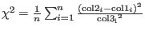. For each datapoint the program outputs a line
sta= deviation (experimental error) to stdout. This may be
used directly for generating useful input for fitting in simannfit.
- comment l1 l2 file:
- comments all lines from l1 and l2 (with #) in a file
- compare file1 file2:
- used to compare data file1 and data file2
all columns and rows are compared and a standard deviation
is calculated according to sum_i (file1_i - file2_i)2
this standard deviation is output to stdout, e.g. as sta=143.3
- convolute c1 c2 file cx cy convfuncfile [d1 d2 datafile]:
-
convolutes data given as column c1 vs column
c2 in file (data pairs
 ) with the convolution function given in
column cx vs cy
of convfuncfile (function 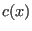)
Range and step width of output file is determined from range and step
of convfuncfile unless a datafile is given. If a datafile is given,
with data column d1 and d2, the result of the convolution is
calculated for x-values of data column d1 and 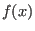 is compared to
data in column d2 - a standard deviation sta is calculated as
sum of squared deviations.Values out of range of convfile are assumed to be zero,
convfile has to be sorted according to ascending x.
Formula:
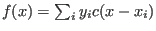 ,
output is written to stdout.
) with the convolution function given in
column cx vs cy
of convfuncfile (function 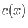)
Range and step width of output file is determined from range and step
of convfuncfile unless a datafile is given. If a datafile is given,
with data column d1 and d2, the result of the convolution is
calculated for x-values of data column d1 and 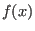 is compared to
data in column d2 - a standard deviation sta is calculated as
sum of squared deviations.Values out of range of convfile are assumed to be zero,
convfile has to be sorted according to ascending x.
Formula:
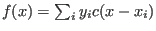 ,
output is written to stdout.
- convolute2d c1 c2 c3 file cx cy cz convfuncfile minx maxx Nx miny maxy Ny:
- convolutes a 2 dimensional function data given as column c3(c1,c2) in file (data tripls 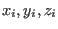) with the convolution function given in column cx vs cy vs cz
of convfuncfile (function 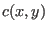)
Range and number of points of output file is determined from minx maxx Nx and
miny, maxy Ny.
Formula:
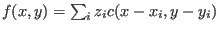 . In the program the contribution to
the sum is evaluated for a discrete triplet cx cy cz of the convolution function, the
resulting x,y will not correspond to a point on the grid defined by minx, max Nx, miny,maxy Ny -
therefore the contribution is distributed (according to distance) onto the neighbouring grid
points.
output is written to stdout.
- coscol col const file:
- calculates cosinus of a column cos(col)
- delcol col file:
- deletes column col in file
- delcols col n file:
- deletes column col several (n) times in file
- delcomments *.*
- removes every comment line (starting with #) from a file and
prints the removed lines to screen
- delline l1 l2 file:
- deletes lines l1 to l2 in file
- delnthline n file
- remove every nth line (n
 2) in file
2) in file
- dif colx coly n *.*:
- used to calculate d(coly)/d(colx) with
differentiation averaging n points
- display 5[e7] 6[e8] ./results/mcdisp.qei [colx coly file2]
- displays a graphic on screen as xy
graph
with column 5 as x axis and columns 6 as y axis. By default graphic is a line graph.
However, if error columns (in the example x error column is 7 and y error column is 8)
are given, then symbols with x and y error bars are shown. Several files
can be plotted in the same graph by extending the commandline. If the contents of a file
changes, the plot is automatically updated.
- displaybubbles 5 6 8 ./results/mcdisp.qei
- works similar as
display, however
a third column is given and the radius of the symbols varied according to the data in
this column.
- displaycontour 5 6 8 ./results/mcdisp.dsigma.tot
- produces a
graphical
display of a 3 dimensional dataset as a colour and/or contour plot. Here '5 6 8'
denote the x,y and z column in file ./results/mcdisp.dsigma.tot, which should
be plotted. Figure 12 shows an sample output of this program.
- displaytext ./results/mcphas.hkl
- monitors the file mcphas.hkl in
a text window on screen.
- displayhtml calc.bat.html
- monitors the file calc.bat.html in
a text window on screen.
- expcol col const file:
- calculates exponent of a column exp(col)
- factcol col[ecolerr] const file:
- multiplies col with a constant in file,
a error colmn may be given and is also multiplied by the absvalue of the constant.
- fform col1 col2 format file:
- reformats numbers in col1 to col2 in file
with
a number format given by format. Format is a number format string according
to c conventions, for example 8.4f or 4.4g ...
- fillcol col expression *.*
- used to fill column with numbers in data file
col .... column
expression ... e.g. 'tan(c1x7.52)+c2'
here c1,c2,.. refer to column 1,2,...
operations are multiplication (x), division(/)
addition (+), subtraction(-), power (xx)
trigonometric functions tan,cos,sin, asin,atan,acos
exp,(natural) log
*.* .... filenname
- fitcol coldata prog col parprog1 parprog2 ... [] in filename:
- simple fitting program for data in coldata.
[]=[and prog col parprog1 parprog2 ... [and ...]]
coldata ...... column number of data column to be fitted
prog ...... program name, e.g. shiftcol
col ...... column to which prog should be applied
parprog1 ..... parameter of the program prog, which should be fitted
filename... filename
in order to fit data in column coldata, prog is run many times on
the column col with varying parameter set parprog1 ..., the result
is scaled to fit best the experimental data. If several programs
are combined with option 'and' then the best linear combination of the
results is calculated by linear regression to fit coldata.
Starting values for the parameters parprog are taken from the
commandline. initial Stepwidths are chosen 10percent of parameter value, or may
be given by adding them to the parameter with an 's', e.g. 100.3s0.1
If a parameter should not be fitted and kept fix, add an 'f', e.g. 100.3f
output: - files can be found in directory results
- filename.fit is created with fitted function and parameter values
examples:
1) to fit a gaussian to column 2 in datafile expdat (with xvalues in column 1)
with starting values 132.3, 0.5 and 10 for position, fwhm and area, respectively:
fitcol 2 gausscol 1 132.3 0.5 10 in exp.dat
2) to do the same fit but with a background create a column 3, fill it
with constant values and use echo as a fake column manipulation program
doing nothing.
newcol 3 -c 1.0 exp.dat
fitcol 2 gausscol 1 132.3 0.5 10 and rem 3 in exp.dat
3) to do the same with a linear background, put into a column 4 the x values
newcol 4 -c 4.0 exp.dat
fitcol 2 gausscol 1 132.3 0.5 10 and rem 3 and rem 4 in exp.dat
4) to fit two gaussians with fixed fwhm and stepping in position initially
only with 0.1
fitcol 2 gausscol 1 132.3s0.1 0.5f 10 and gausscol 1 100.3s0.1 0.5f 10 and rem 3 and rem 4 in exp.dat
- gausscol col position fwhm area *.*:
- calculate a
gaussian from the x values given in column col.
The formula for a gaussian is:
 ,
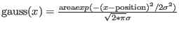
,
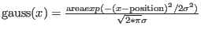
- getvalue colx coly xvalue dx filename
- program to get the y-value of a function by averaging
over an interval xvalue+-dx,
note: colx has to be sorted
output: the y-value is written to stdout and environment variable MCPHASE_YVALUE
1/y-value is written to stdout MCPHASE_YVALUE_INVERSE
standarddeviation to stdaout and MCPHASE_STA
- getvariable variablename filename
- program to get the value of a variable from a file
(e.g. somewhere in a file there is
a statement T=4.3 and you want to get out this 4.3)
output: the variable value is written to stdout and environment variable
MCPHASE_GETVARIABLE_VALUE, the name is stored in
MCPHASE_GETVARIABLE_NAME
mind lines starting with # are ignored (unless these start with #!)
- histcol col [stepwidth|-n steps] *.*:
- generates a histogram of
a column in a data file and stores it in histcol.out. stepwidth is the
stepwidth of the histogram points. Alternatively the number of
steps in the histogram may be given by e.g. -n 100.
- int [-m] colx coly *.*:
- program to integrate columnx vs columny=f(x), integration is done
point by point, the result goes to the data file, the total integral
INT=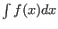 is printed to stdout and set to the
environment variable MCPHASE_INT.
option -m: n-th moments are calculated according to
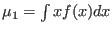/INT,
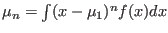/INT.
The results go to stdout and environment variables MCPHASE_INT_MU_1,
MCPHASE_INT_MU_2,MCPHASE_INT_MU_3 ... are set.
- linreg col n file:
- calculates linear regression of n columns in file
col ...... column containing y_k values followed by
n ...... n columns containing x_ik (i=1 to n)
filename... filename
the program calculates the linear regression, i.e. the best values
of coefficients ai such that y_k~sum_i a_i*x_ik for every data line k
in the file. The n linear regression equations solved to determin a_i
are (i,j=1 ...n):
sum_k x_jk y_k = sum_i a_i (sum_k x_ik * x_jk)
Output: - sdtoud: best coefficients a_i and standard deviation
sta=sum_k (y_k-sum_i a_i*x_ik)^2
- file: new column col+n+1 contining sum_i a_i*x_ik
- lorentzcol col position fwhm area:
- calculate a lorentzian from
a column with x values, the formula for a Lorentz curve is:
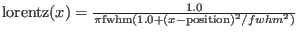
- multcol colx coly file:
- multiplies column x and column y of file,
result is stored in col y
- newcol col [options] file:
- creates a new column col in file containing the line numbe. option: -c 12.3 ... instead of line number put constant 12.3 into the new column
- newcols col n [options] file:
- creates n new columns from column col
in file. New columns are inserted after column col and contain the same data as column col.
options: -c 12.3 ... put constant 12.3 into the new columns, -n ... put line number into the new column.
- newline n text file:
- creates a new line number n in file containing
the text
- potcol col const file:
- col=col in file
- range col min max file:
- deletes (comments out) all data points outside
min max in column col of
file file (remember to store your full data set in some other
file before using this command), # is used to comment lines
- rotate xcol ycol angle file:
- program rotate used to rotate coordinate axes,
xcol,yxol=columns containing x and y ,
angle=angle
 of rotation around z.
of rotation around z.
The rotation is done using the following formula:
- rpvalue colx coly *.*:
- program rpvalue used to
calculate
the 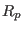-value from columns number colx and coly
in a file *.*. The -value is defined as
 denotes the number of data points in the file.
denotes the number of data points in the file.
- setvalue row column text files:
- sets the numerical value in a specified position of a data file.
row : row number
column : column number
number : text to be placed in file at this position
files : one or more filenames
example: $0 4 5 3.142 data.dat
replaces the number in row 4 and column 5 by 3.142 in file data.dat
- shiftcol col const *.*:
- used to add a constant (const) to a column
(number col) in file(s) *.*
- sincol col const file:
- calculates sinus of a column sin(col)
- sumcol col *.*
- prints to stdout number of lines, sum of squares, sum
of absolute values of column col in file *.*
- swapcol colx coly file:
- swaps column x and column y of file
- tancol col file:
- calculates tangens of a column tan(col)
- tanhcol col file:
- calculates tangens-hyperbolicus of a column tanh(col)
- uvw2fwhm u v w col *.*:
- used to calculate the full
width half maximum from
2theta in degree according to fullprofs u,v,w parameters ...
The column col in file *.* must contain 2theta scattering angle
values and is overwritten with the fwhm as calculated by
- zshift constx colx coly *.*:
- shifts colx by a constant such that it
is zero at a specified value constx of colx.